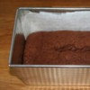

torek, 2. februar 2010.
U zadrugu po hranu
 Zahvaljujući Mr. Delti - i bez obzira šta priča Mr. ministar Milosavljević - hranimo se pretežno skupo, a izbor je mali, kad se uporedi sa evropskim prosekom..
Zahvaljujući Mr. Delti - i bez obzira šta priča Mr. ministar Milosavljević - hranimo se pretežno skupo, a izbor je mali, kad se uporedi sa evropskim prosekom..
E, sad, zamislite da nekome u Beogradu kažete da jedna od opcija da kupuje zdravu hranu po povoljnim cenama, i do 40 posto nižim od uobičajenih, da odradi svoju smenu u magacinu/prodavnici? Pretpostavljam da bi većina bila zapanjena i posumnjala da neko vraća komunizam zadružnog tipa.
nedelja, 24. januar 2010.
Kolač čokolada-banana... and we're back
 Ovaj kolač je kao stvoren za pratnju kafi. Može stajati 2-3 dana jer mu banane daju svežinu, ali ovo je samo teorija - u praksi, neće dočekati jutro.
ãetrtek, 4. junij 2009.
Mađarska svadba
 Svadbe spadaju među najbitnije i najzanimljivije običaje u društvu, bez obzira na promene i pojednostavljivanja kroz vreme, globalizaciju i slično.
Svadbe spadaju među najbitnije i najzanimljivije običaje u društvu, bez obzira na promene i pojednostavljivanja kroz vreme, globalizaciju i slično.
I, da, ljude definitivno interesuje kako sve to izgleda negde drugde, a prilike za saznavanje i nisu baš česte. Moja iskustva u tom pogledu su skromna: Jednom sam u Poljskoj bila na crkvenom venčanju, i jednom smo u Grčkoj, slučajno, naišli na svadbu u bašti restorana, pa i svratili i uhvatili se u kolo. Ali, nikad nisam učestvovala u celom procesu kao ovde u Mađarskoj, uključujući i par dana pre i par dana posle.
ãetrtek, 26. marec 2009.
Ženski geek i kolači
petek, 6. februar 2009.
Mexican cuisine
ãetrtek, 9. oktober 2008.
Pivo piše o vinu
nedelja, 25. november 2007.
Valentinina čorba od bundeve
ponedeljek, 10. september 2007.
(Tri) Pite
nedelja, 9. september 2007.
Žedni putnik
torek, 7. avgust 2007.
Letnji obrok
petek, 27. julij 2007.
Mediteransko leto
torek, 3. julij 2007.
Interfest
torek, 19. junij 2007.
Pet vinskih gadgeta
ponedeljek, 18. junij 2007.
Dve vinske priče
petek, 8. junij 2007.
InterFest 2007
petek, 27. april 2007.
Pizza, food superstar
ãetrtek, 19. april 2007.
In vino
ãetrtek, 5. april 2007.
Par ideja
ãetrtek, 22. marec 2007.
Makedonska vina
ponedeljek, 5. marec 2007.
Koktel priče
ponedeljek, 29. januar 2007.
Puž, pica i vešalica
sreda, 27. december 2006.
Post o postu
ãetrtek, 23. november 2006.
Kafa i društvo
torek, 7. november 2006.
Food talk
sreda, 11. oktober 2006.
Tranzicija kafana
sreda, 20. september 2006.
Kesica čaja - Novi život
petek, 14. julij 2006.
Grilling me softly
torek, 4. julij 2006.
Novosadska kuvarica
ãetrtek, 1. junij 2006.
Istorijska kujna
ponedeljek, 30. januar 2006.
Smoked Eel II: The Salad!
nedelja, 29. januar 2006.
Smoked Eel I: Risotto
ponedeljek, 16. januar 2006.
Nero D'Avola, Sicilia
ponedeljek, 9. januar 2006.
Vuelvo al sur - Malbec
torek, 11. oktober 2005.
Pasta Putanesca

 RSS feed
RSS feed
 sadržaji se objavljuju pod
sadržaji se objavljuju pod